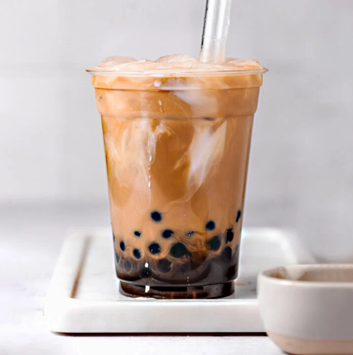

Bubble Tea

Description
Bubbletea is a sweet drink with chewy tapiocas. This is an easy fast receipt for making 500ml original flavoured bubble tea.
Ingredients
- Instant Tapioca
- Black Tea Bags
- White/Brown Sugar
- Milk
Steps
- Boil 500ml water in a small pot
- When boiling, turn to low heat, add the tea bags
- Boil for 5 minutes, remove the pot off the heat
- Add sugar and milk in
- Boil 1000ml water in a different pot
- When boiling, add instant tapioca
- Stir to avoid stick to the bottom
- Boil for 5 minutes, then remove from the heat
- Put on a lid and let it sit for 2 minutes
- Drain the tapioca, and rinse under the tap water to wash off the starch
- Pour the milktea in a cup, add tapioca and ice
- Enjoy!